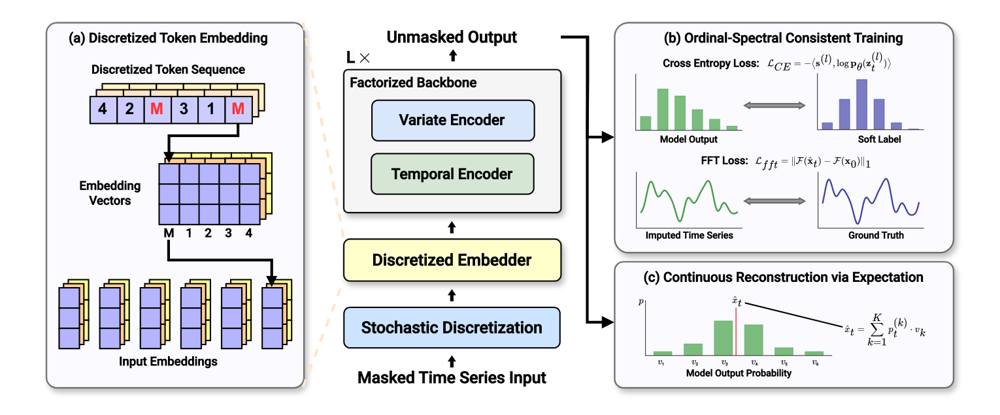
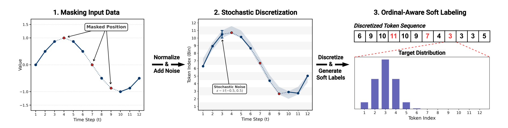
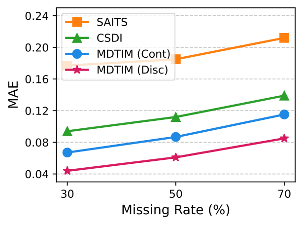
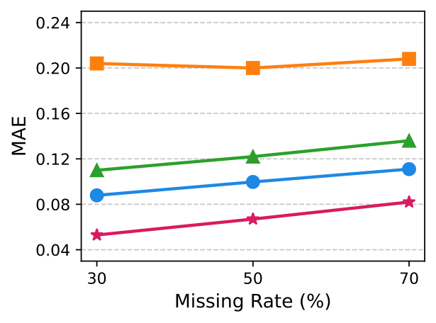
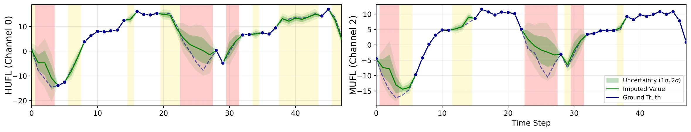

Overview of MDTIM. A masked time series is mapped to ordinal tokens by Stochastic Discretization, embedded by the Discretized Embedder, and processed by a factorized backbone interleaving temporal and variate encoders. Training combines an ordinal-aware soft-label cross-entropy with a spectral (FFT) consistency loss, and continuous values are reconstructed as the expectation over the predicted bin distribution.
Abstract
Time series imputation is a crucial area for reliable time series analysis, yet it remains challenging
due to the complex temporal dynamics and noise of real-world data. Existing approaches, however,
exhibit two limitations: missing and observed values are embedded within the same representation
space without explicit structural separation, and continuous diffusion-based methods are trained to
predict added noise rather than the original signal. To address these, we propose the
Masked Diffusion Time-series Imputation Model (MDTIM), which leverages the training paradigm of
masked diffusion models for imputation tasks. The [MASK] token is structurally orthogonal
to valid observations, and the model directly predicts the original values, naturally aligning both the
representation and the learning objective with the imputation task. To bridge the gap between discrete
masked diffusion and the continuous, ordinal nature of time series, we further introduce
Stochastic Discretization, which maps continuous values to ordinal-aware tokens while preserving
continuous dynamics. Our experiments on diverse benchmarks confirm that MDTIM achieves superior
robustness and scalability, consistently outperforming state-of-the-art deterministic and generative
baselines across various missing scenarios.
Structural separation
The absorbing [MASK] token is orthogonal to every observed value — the model always
knows what is missing, with no indicator heuristics.
Signal-aligned objective
MDTIM predicts the original values directly instead of added noise, matching the training objective to the imputation task.
Ordinal-aware tokens
Stochastic Discretization and soft labels preserve the continuous, ordinal structure of the signal inside a discrete token space.
Stochastic Discretization

From continuous values to ordinal-aware tokens. Observed values are
normalized and perturbed with bounded uniform noise, discretized into token bins, and supervised with
ordinal-aware soft labels centered on the true bin — keeping the quantization differentiable in effect
while the [MASK] state stays strictly separate.
Results


Robustness to missingness. MAE as the missing rate grows from 30% to 70% under uniform (left) and geometric (right) masking. The discrete formulation, MDTIM (Disc), outperforms SAITS, CSDI, and its own continuous control MDTIM (Cont) at every rate, with the margin widening at severe missingness.

Qualitative example. MDTIM reconstructions (with uncertainty) against ground truth on ETTh.
BibTeX
@inproceedings{kim2026mdtim,
title = {Discretizing Continuous Time Series for Imputation with Masked Diffusion Training},
author = {Kim, Dongbin and Lee, Seungyun and Shin, Geonwoo and Lee, Jaewook},
booktitle = {Advances in Neural Information Processing Systems},
year = {2026}
}